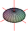

| Stewart Section 14.7 | #s 3, 9, 12, 18, 19. |
| Stewart Section 14.8 | #s 1, 3, 5, 10, 13. |
| Stewart Section 14.9 | #s 2, 3, 9, 10, 11. |
| Stewart Section 14.4 | #s 3, 9, 10, 15, 16, 17, 18. |
| Stewart Section 14.5 | #s 3, 5, 6, 8, 13, 14, 19, 25, 27, 28, 31. |
| Stewart Section 14.2 | #s 17, 19, 20, 29, 30, 35, 38. |
| Stewart Section 14.3 | #s 1, 2, 5, 6, 7, 11, 13, 14, 16, 19, 20, 29, 30, 31. |
| Stewart Section 13.10 | #s 1, 4, 5, 8, 12, 16, 19, 21, 22, 26, 28, 30, 33, 35. |
| Stewart Section 14.1 | #s 5, 6, 11-14, 19, 20, 21. |
| Stewart Section 14.2 | #s 2, 3, 7, 8, 13, 14, 15. |
| Stewart Section 13.8 | #s 3, 6, 7, 10, 11, 18, 19, 28, 29, 39, 40, 41 (do not do moments of inertia). |
| Stewart Section 13.9 | #s 3, 10, 15, 22, 37, 38, 40, 45, 51, 55, 58. |
| Polar Homework Here | |
| G Section 10.1 | #s 2, 10, 18, 20, 22, 23. |
| G Section 10.3 | #s 6, 8, 9, 16, 19, 21. |
| G Section 15.2 | #s 1, 3, 5, 6, 7, 12, 14, 15. |
| G Section 15.3 | #s 1, 2, 3, 4, 5, 6, 7, 8. |
| G Section 14.7 | #s 7,8,9,10. |
| G Section 14.8 | #s 3, 6, 7, 8, 10, 13, 14, 15. |
| G Section 15.1 | #s 1, 3, 5, 8, 9, 13, 14, 18, 21, 25, 26, 29. |
| G Section 14.4 | #s 1, 2, 3, 4, 5, 6, 7, 8. |
| G Section 14.5 | #s 2, 5, 7, 8, 11, 14, 16, 17. |
| G Section 14.7 | #s 2, 4, 15, 17, 18. |
| Visual Partial Derivatives Homework Here | |
| G Section 14.3 | #s 1, 2, 7, 8, 9, 11, 12, 14, 15, 17. |
| G Section 14.6 | #s 1, 5, 9, 10, 11, 12. |
|  | Quadrics Homework Here |
| G Section 14.1 | #s 2, 3, 5, 6, 7. (Do not bother to graph them, unless you have access to a three-dimensional graphing tool. (Do try to get one, free ones do exist, e.g. Sage, but there are others.) |
| G Section 14.2 | #s 1,2,4,7,10,13. |
| G Section 12.1 | #s 1,5,6,8,10,12. |
| G Section 12.3 | #s 2,5,7,11,13,14,19. |
| G Section 12.4 | #s 1,3,6,9,11, Show: for vectors u,v,w the formula for the vector triple product: ux(vxw) = (u⋅w)v - (u⋅v)w Compute all six cross products among the standard unit vectors i, j, k. |
| G Section 12.5 | #s 2,3,9,13,18,20,23. |